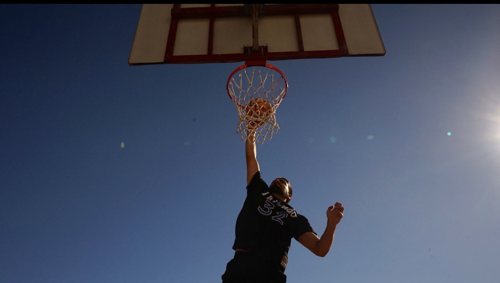

Bok! Moje je ime Korina Mikulic te sam studentica 1. godine prijediplomskog na fakultetu Graficki Dizajn u Zagrebu. Na ovoj stranici vidjet cete koji su moji interesi i hobiji zbog kojih sam i upisala ovaj fakultet. Jako volim slikati sa fotoaparatom te mislim da sam jako talentirana, no ima uvijek mjesta za napredak. Prilozit cu vam ovdje par svojih fotografija sa kratkim opisom. Uzivajte!

Slika prijateljice u crno-bijelome
Slika prijatelja na kosarkaskom terenu
Slika prijateljice na stolici
Uz ove slike, prilazem vam jednu od mojih najdrazih pjesama koja me podsjeca na ljeto. Sad znate jos vise o meni!